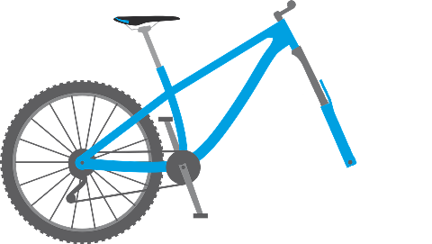
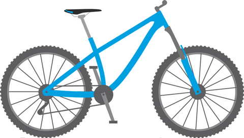
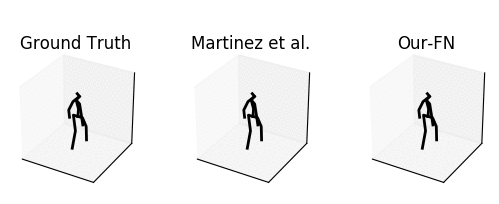

In machine learning, inference tasks can be of the form "given x, output y". For example, if x is the picture below
 x = a bike with a missing wheel
and the inference question is to predict the missing component, a machine learning algorithm may output
y = a wheel
Such model is (arguably) a very good model because given the same problem to a human, he may also answer something like y.
However, if we were to ask a human to describe every details of their thinking when looking at x while answering the inference question,
wouldn't he mention that, at some point, the picture of a complete bike cross their mind?
 xy = the combination (or concatenation) or x and y
It is possible and the representation of a complete bike xy can be activated at some point in the latent values of some standard machine learning methods.
But why not explicitly enforce this correlation? Pattern Completion Learning (PCL) does this.
Formulated by Xu et al. [1], instead of learning a mapping from x to y,
we learn a completion function that completes the latent representation of x (partial pattern) to obtain
the latent representation of xy (complete pattern).
There are two major benefits for using PCL, as described below. These benefits are based on the assumption that
the structure of the latent representation space acquired by the model results stronger correlation between partial and complete patterns than between the
latent representations of x and y. Thus depending on the dataset and the representation learning method used, these benefits may not apply.
Multi-task learning
PCL can effectively applies its learned latent representations to related tasks using the same completion algorithm.
Generic and simple algorithms
PCL can yield high quality prediction using generic model architecture and simple completion functions
such as vector addition (see the sample experiments for more details).
The pattern completion process, as proposed by Barsalou [1], describes a storage and retrieval procedure of sensorimotor information when presented in
a situation. First, seen sensorimotor information are stored as encodings (or decontextualized concepts) in model-relevant area of the brain.
For example, there are clusters of neurons responsible for edge detection and others for color detection. These encoding are relatively stable,
constituting the semantic memory. They can be activated without bottom-up stimuli and their decoding (or reenactment) can be incomplete,
inaccurate or biased.
Then, when facing a particular situation, input sensorimotor information triggers a contextualized concept in the brain — an agent-dependent
instruction manuals, supporting goal achievement in specific context. The process for retrieving the appropriate instruction
is pattern completion: when a portion of some sensorimotor regularity occurs, the larger regularity is activated in the brain.
For example, after cutting several cakes, a human can naturally infer the appropriate action sequence when presented in front of a cake with a
knife in hand. This is because perceiving the cake and holding the knife often co-occur with cake cutting, thus triggers
the entire cake-cutting-procedure encoding in action-specific area of the brain. This process can be used to retrieve encoding for other
modalities such as the linguistic descriptions of the procedure and objects involved, other related sensory experience, etc.
PCL contains two steps: (1) a representation learning step and (2) a pattern completion step.
Here, we will describe PCL in a multi-task learning setting.
Representation learning step
Given a set of tasks {T1,…,Tn} where each Ti={(x(i)j,y(i)j)}kij=1 is a dataset of input-output pairs.
We learn an autoencoder (E,D) that can encode x(i)j and x(i)jy(i)j for all
i∈{1,…,n} and j∈{1,…,ki}.
Pattern completion step
Given the learned autoencoder in the previous step, for each task Ti we learn a completion function Gi such that
PCL is still an ongoing research topic. So far, we have tested it using deep neural networks on two datasets, as listed below,
and two completion function implementations: vector addition and a single dense layer ANN.
Human3.6M for human motion prediction,
motion generation and action classification [1][link][ArXiv]
 Human motion prediction.
MNIST for handwritten
digit classification and generation [link]
Digit generation from input label with end-to-end learning (and no GAN). Digit generation from input label with PCL.
[1] Yi Tian Xu, Yaqiao Li, David Meger, Human motion prediction via pattern completion in latent representation space, 16th conference on Computer and Robot Vision (CRV), 2019. Accepted.
[ArXiv]
[2] Lawrence W Barsalou. Situated conceptualization. In Handbook of categorization in cognitive science, pages 619–650. Elsevier, 2005.